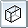
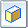
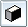

Apply a model display style to a PMI drawing view
This procedure is for draft documents.
-
Click a PMI drawing view.
-
On the command bar, click the button corresponding to the model display style you want to apply.

Visible and Hidden EdgesColor Shaded

Shaded with Visible EdgesGrayscale Shaded

Grayscale Shaded with Visible Edges -
Right-click the PMI drawing view and choose Update.
Tip:
To learn how to change model display style for part, sheet metal, and assembly documents, see Change the model display style.